出発～大間(青森)
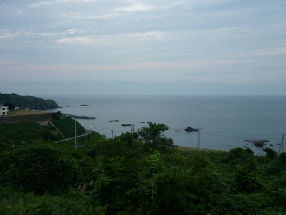
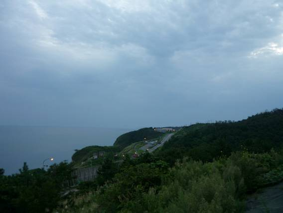
名古屋ICから高速道路を走り続けた。途中、妙高の辺りで雨に見舞われる。高速で雨に降られると、次のSAPAまで雨に打たれながら走り続ける必要があるので辛い。北陸自動車道米山SAから海を望む。佐渡島が見えるそうだがそれらしいものは確認できなかった。
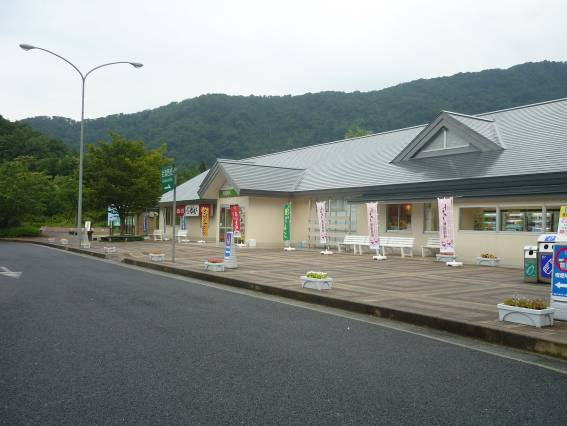
磐越自動車道阿賀野SAで小休止。少し雨が降ったようだ。
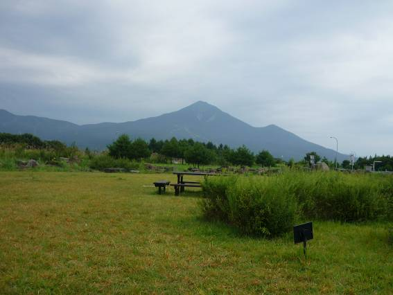
東北で有名な磐梯山を望む。すっかりスキーリゾートに開発されてしまっている。東北まで来ると信州のように山脈が連なっているという雰囲気ではなく、比較的なだらかな山が多い。見通しもよく、人家も少ないのでどことなくのんびりとした雰囲気が味わえる。時間がゆっくりと流れているように感じた。
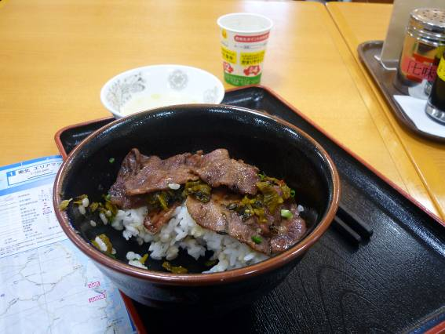
国見SAで食べた牛タン丼。以前、蔵王にスキーに訪れた際にも食べたがやはりおいしかった。
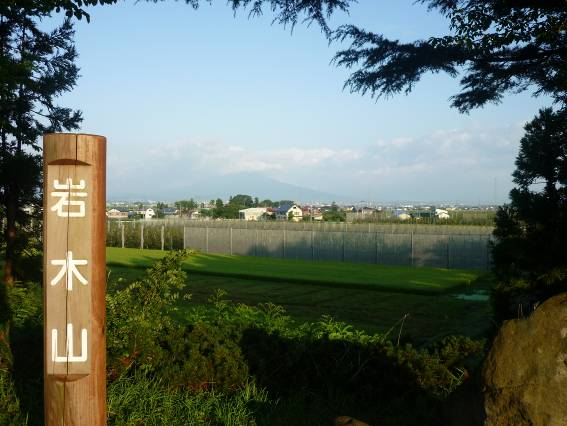
津軽SAから津軽富士、岩木山を望む。雨続きだっただけに今後は晴れてほしい。
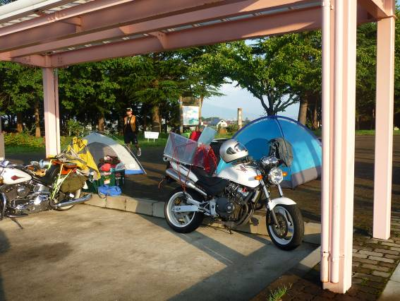
SAにて。夜はずっと雨が降っていたが、浸水することは無かった。しかし、衣服がずぶ濡れになっていたのでほとんど眠れなかった。同じことを考える仲間もいた。
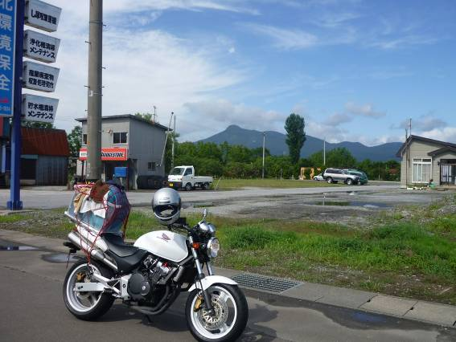
青森の街から霊山である恐山を望む。ここから山頂付近を目指す。
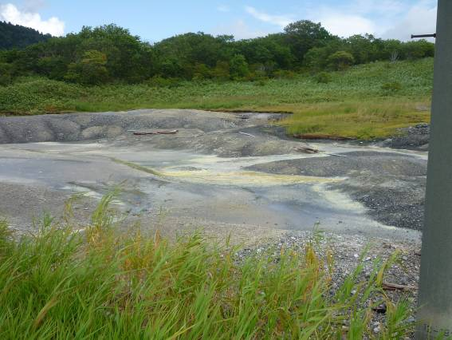
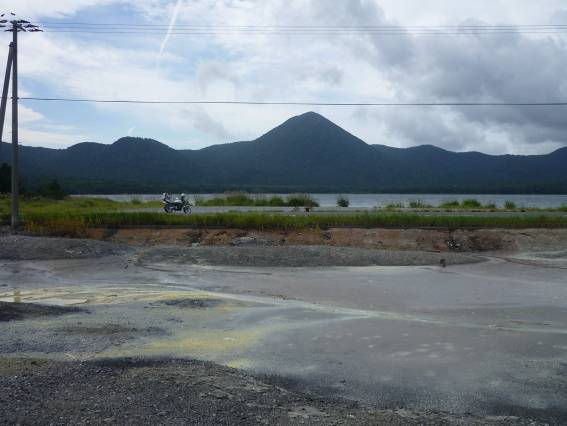
恐山の山頂付近。いたるところからイオウが噴出し、腐卵臭をただよわせていた。川も黄色くなっている。この辺りはイタコが有名だそうで、イタコの看板が出ている古い家屋が立ち並んでいた。
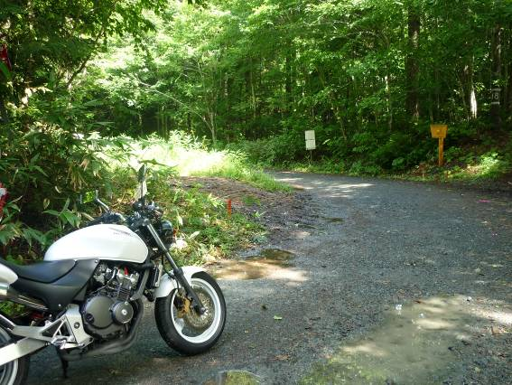
山頂付近から大間へ抜けようと思ったが途中からダートに。舗装された道が続いているものだと思ったが甘かった。ホーネットは泥だらけになってしまった。
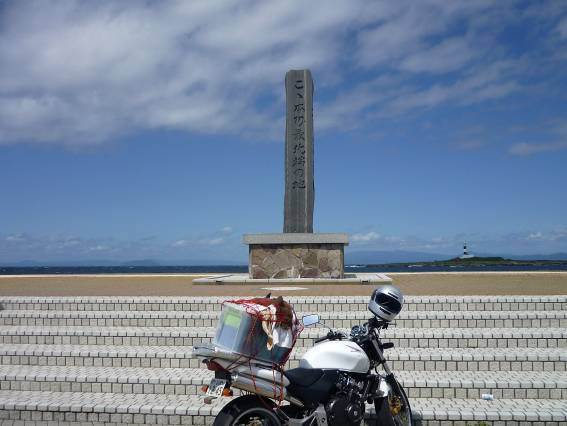
本州最北端へ到達。沖にはうっすら北海道も見えている。名古屋を出発してから1400km程走った。いよいよ北海道に上陸だ。